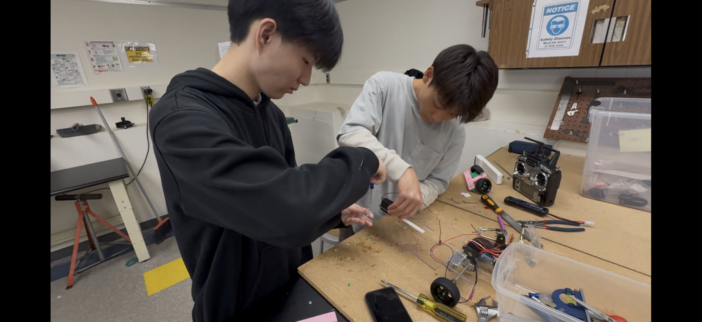

Aerodynamics Engineer
FSAE Carbon Fiber Undertray
Designed a ground-effect undertray through CAD, CFD, and composite fabrication.
Approximately 40 N downforce target achieved.
View project: FSAE Carbon Fiber UndertrayUC Irvine · Expected June 2028
Mechanical Engineering Student
Design, manufacturing, and vehicle systems.
I take mechanical projects from CAD and analysis through fabrication and testing.
Aerodynamics Engineer
Designed a ground-effect undertray through CAD, CFD, and composite fabrication.
Approximately 40 N downforce target achieved.
View project: FSAE Carbon Fiber Undertray
Mechanical Lead
Designed, fabricated, and integrated the mechanical structure for a three-person team.
View project: Hopper Robot
Mechanical Fabrication Lead
Built polycarbonate and printed components; supported electronics integration and testing.
View project: Autonomous Rover
CAD / Assembly Design · Mar – Jun 2025
Designed a fully articulated SolidWorks model from in-game references.
17 unique modeled and assembled components.
View project: Killjoy Turret
Design & Fabrication · Sept 2022 – Jun 2024
Refined the chassis in Onshape, fabricated lightweight parts, and integrated electrical systems for Hydrogen Grand Prix.
14% lower chassis mass · 10 minutes more runtime per canister.
View project: Hydrogen-Powered RC CarSierra Aluminum
I enjoy taking projects from analysis and CAD through manufacturing and testing. My experience includes vehicle aerodynamics, composites, robotics, aluminum extrusion manufacturing, and hands-on fabrication.
Interested in mechanical design, aerospace and defense, vehicle systems, manufacturing, mechatronics, testing, and composite structures.
SolidWorks · STAR-CCM+ · CAD & CFD
Composite fabrication · Machining · 3D printing
MATLAB · Arduino · Mechanical testing
Certified SOLIDWORKS Associate (CSWA)
B.S. Mechanical Engineering
Expected June 2028
GPA 3.56 · Dean’s Honor List
Fluid Dynamics · Mechanics of Structures
Thermodynamics · Statics · Dynamics
Seeking mechanical engineering internships and future full-time roles in aerospace, defense, automotive, robotics, and advanced manufacturing.